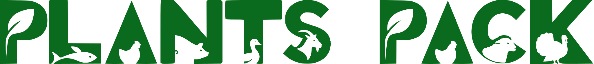

On our map
places on PlantsPack. How vegan they are:
Best cities
Checked by a person, not just imported.
Not in most guides
Where the map is thin
Your turn
Most liked comment wins.
Missing a place? Comment and I'll add it.
Free on web, iOS and Android. Vegan-focused: if a place has nothing vegan, it is not on the map.
Vegan
